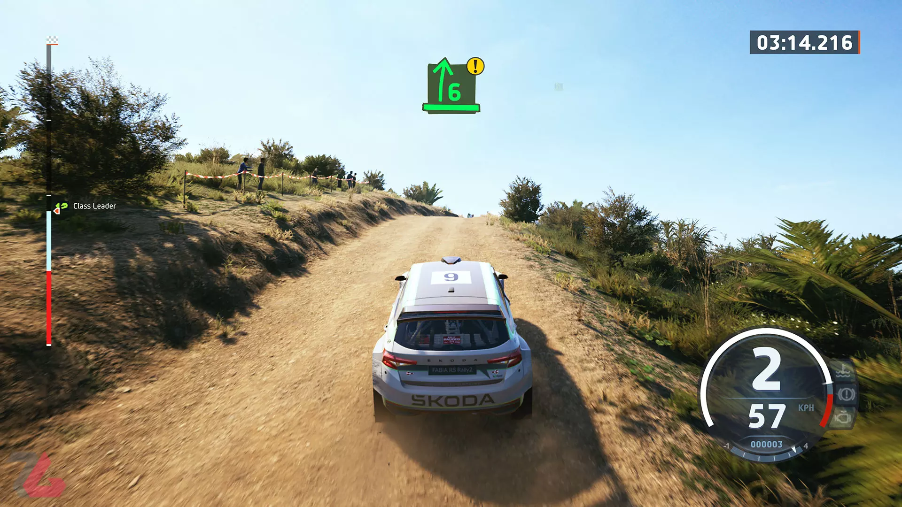

فاطمه محمودی
دوشنبه 18 بهمن 1402 ساعت 22:51
با ورود به EA Sports WRC، اولین محتوایی که با آن مواجه میشوید، حالت Career بازی است. در جریان Career بازیکنان با یک راننده شخصیسازی شده پا به جهان مسابقات رالی میگذارند. البته در این بخش هدایت کامل تیم خود را هم برعهده دارید و میتوانید تعیین کنید که از چه سطحی مسابقات را آغاز کنید. بهعبارتی از همان ابتدا مسابقات WRC را شروع کنید یا از WRC 2 و WRC جونیور کار را آغاز کنید. قطعا شروع از پایههای پایینتر، تنوع مسابقات و ماشینهای مسابقاتی موجود در بازی را هم افزایش میدهد. مسابقات Career بهصورت هفتگی انجام میشود. هر هفته میتوانید از میان مسابقات درنظر گرفته شده، یکی را انتخاب کرده و مسابقه دهید. البته که مسابقهها در کلاسهای متفاوتی انجام میشوند و حال میتوانید ماشین مورد نظر خود را خریداری کرده یا از صفر آن را بسازید.
مسابقه دادن تنها کاری نیست که باید در حالت Career انجام دهید. رویدادهایی مثل استراحت دادن به اعضای تیم یا جذب نیروهای جدید در تیم مهندسی، از مواردی هستند که باید به آنها توجه کنید. تمامی این موارد دست بهدست هم میدهند تا مأموریتهای مختلفی را در حالت Career کامل کرده و تیم شما در شرایط بهتری قرار بگیرد. برای مثال، بودجه هفتگی تیم برای خرید ماشین بالاتر برود تا بتوانید ماشینهای بهتری را خریداری کنید. وجود حالتها و ویژگیهای مختلف زمانی تاثیر اصلی خود را میگذارد که از نظر المانهای شبیهساز و مواردی مثل طراحی ماشین و عملکرد آنها، بازی مورد نظر عملکرد خوبی را از خود بهنمایش بگذارد. طراحی ماشینهای بازی EA Sports WRC از نظر هندلینگ و فیزیک، بسیار خوب بوده و تجربهی لذتبخشی را از این حیث کسب خواهید کرد. به هنگام پیچیدن، هندلینگ ماشینها اذیت کننده نیست و ازطرفی بهگونهای هم نیست که حس کنید پشت ماشینهای بازیهای آرکید نشستهاید. هر ماشین فیزیک و هندلینگ متفاوتی داشته و حتی تفاوت در قدرت ماشینها از نظر سرعت و شتاب را بهخوبی حس میکنید.
ازطرفی Moments به شما اجازه میدهد تا تعدادی از مسابقات مهم و خاطره انگیز جهان WRC را مجددا تکرار کنید. البته که بعضی از این مسابقات هم دقیقا همانند نوع واقعیشان در دسترس نیستند، اما اکثرا مواردی هستند که در قدیم یا فصل فعلی رخ دادهاند. متاسفانه Moments با تمام جذابیتی که دارد، از کمبود شدید محتوا رنج میبرد و وجود مسابقات متعددتر یا استفاده بهتر از پتانسیل این بخش میتواند EA Sports WRC را به یک محصول دلچسبتر تبدیل کند. از نظر محتوا، بازی آنطور که باید و شاید عملکرد مناسبی در حالتهای چمپیونشیپ و مومنتس ندارد، اما از نظر طراحی ماشین و المانهای شبیهسازی بازیهای رالی، به بهترین شکل ممکن عمل کرده است. همچنین EA Sports WRC را میتوان شروع خوبی برای کاربران تازهوارد دانست.
همچنین برخورد با موانع داخل پیست یا مسیر مسابقهای، بهخوبی روی ماشین شما تأثیرگذار است و اگر نتوانید بین هر راند بخشهای آسیب دیده ماشین خود را تعمیر کنید، قطعا در راند بعد عملکرد و راندمان ماشین شما کاهش پیدا کرده و احتمال اینکه دچار مشکل شوید، وجود دارد. کمک راننده در اینجا نقش یک راهنما را ایفا میکند. اینکه پیچ پیش رو چه زاویهای دارد، چه نوع پیچی است یا در مسیر با چه نوع سطوح شیبداری روبهرو میشوید، اطلاعاتی است که کمک راننده آنها را دراختیار شما قرار میدهد. طراحی این بخش هم عالی است و دقت به آنها، روی روند رانندگی شما تأثیرگذار است.